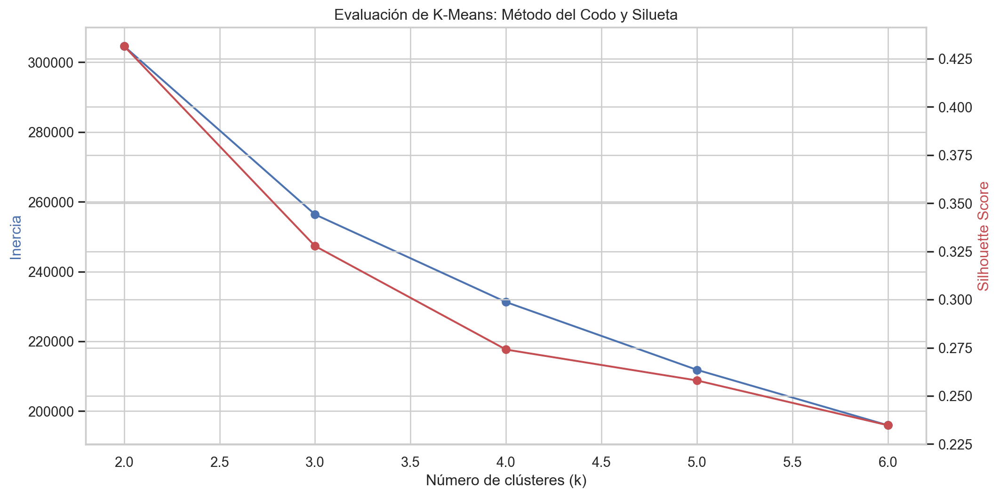
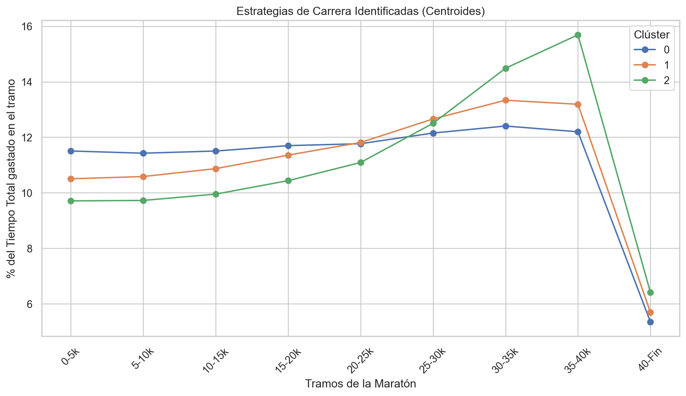
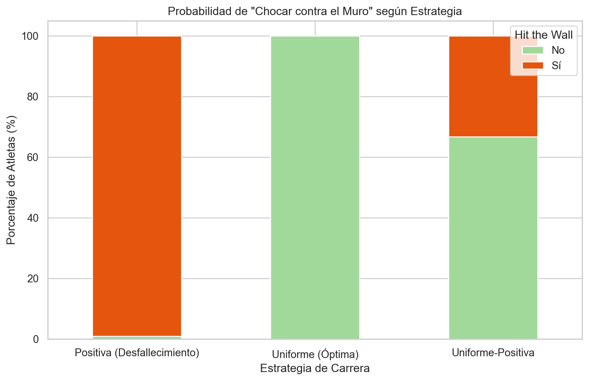
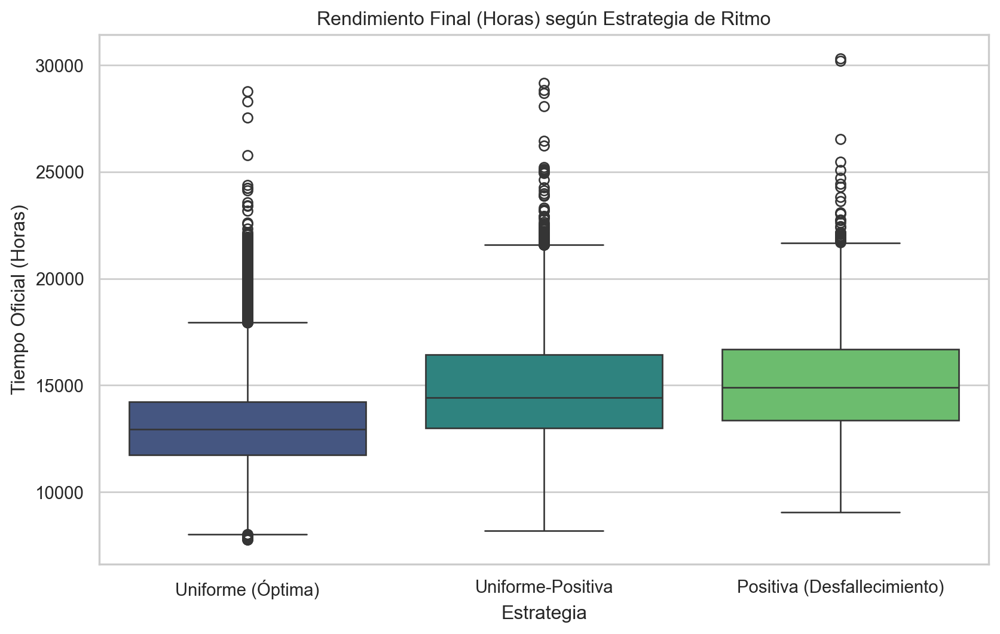
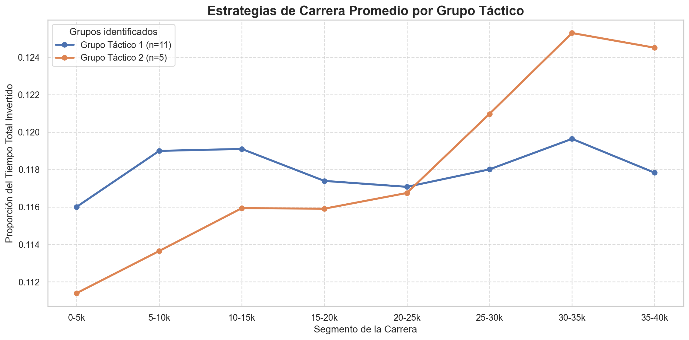
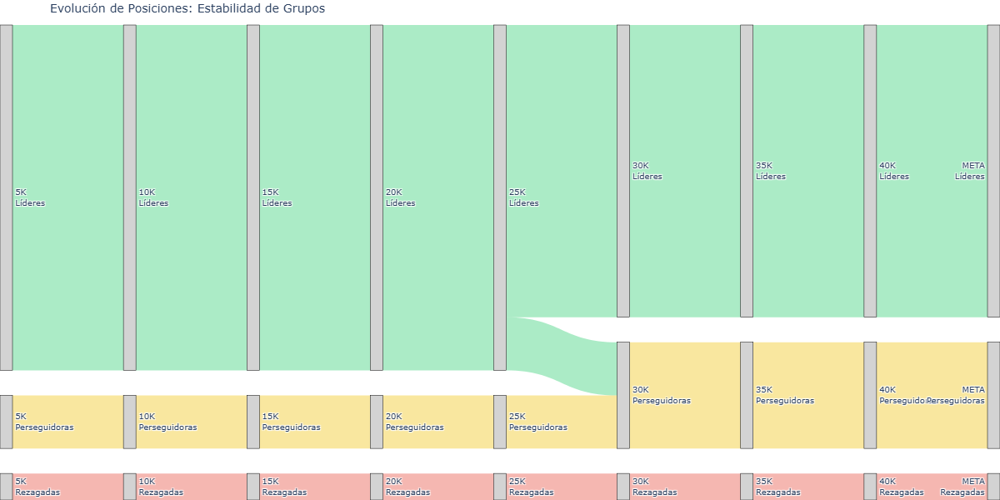
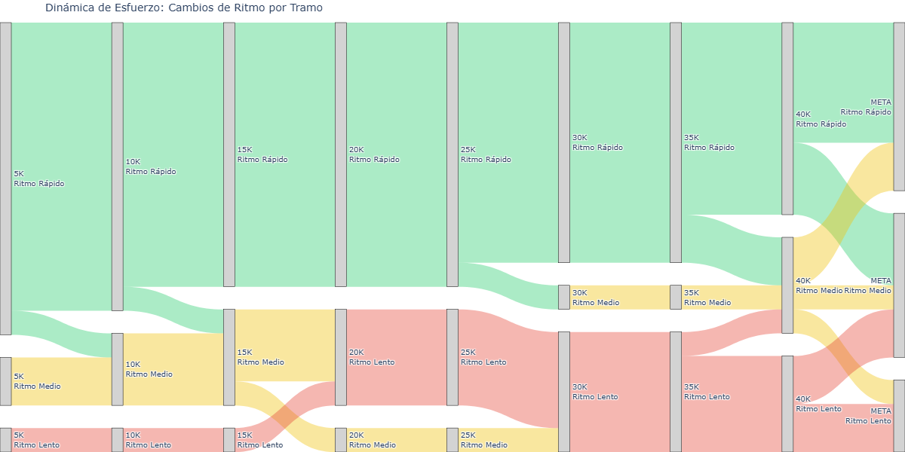
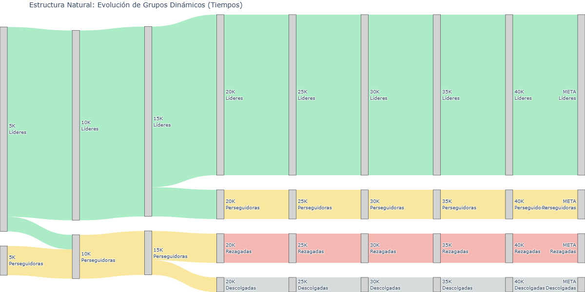
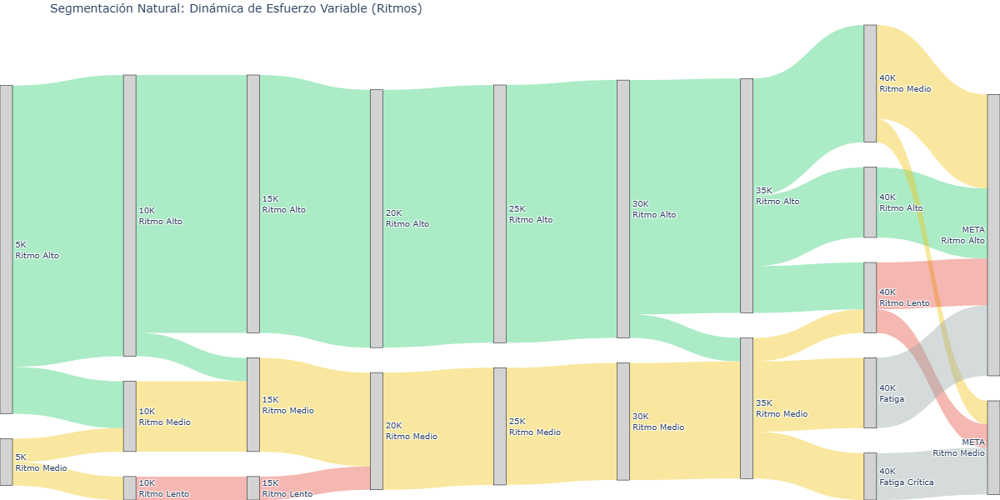

En este capítulo se realizarán diversos estudios de Aprendizaje no Supervisado. Dada la naturaleza de los datos, se seguirán los siguientes enfoques:
Clustering No Jerárquico para descubrir las estrategias de carrera
Clustering Jerárquico para agrupar a corredores similares en cuanto a sus resultados en las 3 maratones
Clustering en streaming para seguir a los atletas de élite a través de cada parcial
Ver código
import pandas as pdimport numpy as npimport seaborn as snsimport re# El algoritmo para pacingfrom sklearn.cluster import KMeans# Las métricas para decidir si la 'k' es buenafrom sklearn.metrics import silhouette_score# Herramienta para escalar datosfrom sklearn.preprocessing import StandardScaler# Herramientas para hacer el jerárquicofrom scipy.cluster.hierarchy import dendrogram, linkage, fcluster# Herramientas para los mapas auto-organizados# Para los gráficos del clustering en streamingimport plotly.graph_objects as goimport matplotlib.pyplot as pltimport plotly.express as pxfrom kneed import KneeLocator # para clusters óptimossns.set_theme(style="whitegrid")plt.rcParams['figure.figsize'] = (12, 6)plt.rcParams['font.size'] =11df_boston = pd.read_parquet("../data/processed/boston_post_eda.parquet")
4.1 Clustering No Jerárquico: Identificación de Estrategias de Carrera (Pacing)
El objetivo de esta sección es descubrir y categorizar de forma automática las diferentes estrategias de ritmo (pacing strategies) empleadas por los corredores durante la maratón. Para ello, utilizaremos técnicas de aprendizaje no supervisado, buscando agrupar a los atletas según la distribución de su esfuerzo a lo largo de los 42,195 km, independientemente de su marca final absoluta.
4.1.1 Fundamento Teórico: El Algoritmo K-Means
Para llevar a cabo esta agrupación, implementaremos el algoritmo K-Means (K-Medias), uno de los métodos de clustering particional más robustos y utilizados.
A diferencia del clustering jerárquico, K-Means requiere que se defina a priori el número de grupos (\(k\)) que se desean encontrar. El algoritmo funciona de manera iterativa siguiendo este proceso:
Inicialización: Se seleccionan aleatoriamente \(k\) puntos en el espacio de características que actuarán como los centros iniciales de los grupos (centroides, \(\mu_i\)).
Asignación: Se calcula la distancia euclidiana entre cada corredor y todos los centroides. Cada corredor se asigna al clúster cuyo centroide esté más cercano.
Actualización: Una vez asignados todos los puntos, se recalcula la posición de cada centroide moviéndolo a la media matemática de todos los corredores que pertenecen a ese grupo.
Convergencia: Los pasos 2 y 3 se repiten de forma iterativa hasta que los centroides dejan de moverse o se alcanza un número máximo de iteraciones.
Matemáticamente, K-Means busca minimizar la varianza intra-clúster, conocida como Inercia (\(J\)), que se define como la suma de las distancias al cuadrado de cada punto respecto a su centroide:
Donde \(k\) es el número de clústeres, \(C_i\) es el conjunto de puntos que pertenecen al clúster \(i\), \(x\) es el punto de datos (la estrategia del corredor) y \(\mu_i\) es el centroide del clúster.
4.1.2 Metodología de Ejecución y Análisis
Para que el algoritmo capture estrategias puras y no se sesgue por la velocidad absoluta del corredor, se debe seguir un riguroso proceso de ingeniería de características (Feature Engineering) y análisis posterior.
4.1.2.1 Transformación de los Tiempos (Normalización de Ritmos)
Los tiempos del dataset original son acumulativos. Para capturar el esfuerzo en cada tramo, se debe transformar la variable de paso calculando el tiempo neto de cada segmento (ej. \(T_{10k} - T_{5k}\) para obtener el tiempo invertido exclusivamente entre el kilómetro 5 y el 10). Una vez calculados los tiempos netos por tramo, estos se deben dividir entre el tiempo final oficial (official_time). De este modo, cada variable representará el porcentaje del tiempo total que el atleta invirtió en ese parcial concreto.
4.1.2.2 Determinación del Número Óptimo de Clústeres (\(k\))
Se iterará el algoritmo K-Means para distintos valores de \(k\) (por ejemplo, del 2 al 10). Para seleccionar el \(k\) óptimo que mejor defina las tipologías de corredores, se apoyará la decisión en dos métricas gráficas:
El Método del Codo (Elbow Method): Analizando la curva de caída de la Inercia.
El Análisis de la Silueta (Silhouette Score): Para medir la cohesión y separación real de los grupos formados.
Ver código
inercia = []silueta = []rango_k =range(2, 7) # Probamos de 2 a 6 clústeresfor k in rango_k: km = KMeans(n_clusters=k, random_state=42, n_init=10) km.fit(df_pacing_norm) inercia.append(km.inertia_) silueta.append(silhouette_score(df_pacing_norm, km.labels_, sample_size=10000))# Visualización de métricasfig, ax1 = plt.subplots()ax1.plot(rango_k, inercia, 'o-', color='b', label='Inercia (Codo)')ax1.set_xlabel('Número de clústeres (k)')ax1.set_ylabel('Inercia', color='b')ax2 = ax1.twinx()ax2.plot(rango_k, silueta, 'o-', color='r', label='Silueta')ax2.set_ylabel('Silhouette Score', color='r')plt.title('Evaluación de K-Means: Método del Codo y Silueta')plt.show()# 1. Encontrar el K óptimo para la Silueta (Máximo valor)k_optimo_silueta = rango_k[np.argmax(silueta)]# 2. Encontrar el K óptimo para el Codokl = KneeLocator(rango_k, inercia, curve="convex", direction="decreasing")k_optimo_codo = kl.elbowprint("-"*30)print(f"ANÁLISIS DE CLUSTERING")print("-"*30)print(f"➤ Sugerencia por Silueta: {k_optimo_silueta}")# Gestión del error si el codo es Noneif k_optimo_codo:print(f"➤ Sugerencia por Método del Codo: {k_optimo_codo}")if k_optimo_silueta == k_optimo_codo:print(f"\nConclusión: Ambas métricas coinciden en k={k_optimo_silueta}.")else:print(f"\nConclusión: Las métricas sugieren entre {min(k_optimo_silueta, k_optimo_codo)} y {max(k_optimo_silueta, k_optimo_codo)} clusters.")else:print("➤ Sugerencia por Método del Codo: No detectado automáticamente.")print(f"\nConclusión: Basándonos solo en Silueta, el valor sugerido es k={k_optimo_silueta}.")print("Revisa el gráfico para confirmar el número de clusters óptimo.")print("-"*30)

------------------------------
ANÁLISIS DE CLUSTERING
------------------------------
➤ Sugerencia por Silueta: 2
➤ Sugerencia por Método del Codo: No detectado automáticamente.
Conclusión: Basándonos solo en Silueta, el valor sugerido es k=2.
Revisa el gráfico para confirmar el número de clusters óptimo.
------------------------------
Aunque la recomendación incial es de 2 clusters, al observar el gráfico se observa un cambio significativo en la pendiente de la gráfica en el número 3. En maratón, cambios que a priori parecen pequeños pueden marcar la diferencia entre el ganador y los demás, o entre conseguir el objetivo o no hacerlo. En pro de tener una visión granular de las estrategias de carrera se establece el número óptimo de clusters en 3.
4.1.2.3 Perfilado y Visualización de Estrategias
Una vez elegida la \(k\) óptima y asignados los grupos, se extraerán las coordenadas de los centroides finales. Se graficarán estos centroides en un gráfico de líneas superpuestas (Eje X: Segmento de carrera; Eje Y: Porcentaje de tiempo invertido). Esto permitirá nombrar a cada cluster.
Ver código
# Ajustamos con el k elegido (ejemplo k=3)k_optima =3kmeans_final = KMeans(n_clusters=k_optima, random_state=42, n_init=10)df_boston['cluster_pacing'] = kmeans_final.fit_predict(df_pacing_norm)# Extraer centroides para ver la "forma" de la estrategiacentroides = pd.DataFrame(kmeans_final.cluster_centers_, columns=df_pacing_norm.columns)# Visualización de las estrategiascentroides.T.plot(marker='o')plt.title('Estrategias de Carrera Identificadas (Centroides)')plt.xlabel('Tramos de la Maratón')plt.ylabel('% del Tiempo Total gastado en el tramo')plt.xticks(range(9), ['0-5k', '5-10k', '10-15k', '15-20k', '20-25k', '25-30k', '30-35k', '35-40k', '40-Fin'], rotation=45)plt.legend(title='Clúster')plt.show()

En este apartado se diferencian 3 tipos de estrategia que tienen en común una bajada drástica de porcentaje de tiempo empleado desde el kilómetro 40 hasta la meta. Esto ocurre porque este tramo tiene solo 2195 metros frente a los 5km que forman todos los segmentos anteriores. Esto hace que el porcentaje de tiempo que los atletas emplean en recorrer ese segmento se reduzca a menos de la mitad.
En cuanto a los demás estadios de la carrera, se observa lo siguiente:
La estrategia 0, dibujada de azul, es muy estable a lo largo de toda la carrera. No se ven variaciones significativas en el porcentaje de tiempo que los atletas emplean en cada uno de los segmentos. Este tipo de dinámica de carrera se conoce como Uniforme, caracterizada por mantener un ritmo constante; es el comportamiento óptimo para la maratón.
La estrategia identificada con un 2 y dibujada de verde muestra un incio más rápido (menos porcentaje de tiempo en los primeros estadios) y un final más lento (más porcentaje de tiempo en los segmetos de la mitad de la carrera hasta el final) con respecto a las otras estrategias. En otras palabras, la diferencia entre la velocidad incial y final es considerablemente mayor. Esto refleja una bajada de rendimiento significativa desde la mitad de la carrera hasta el final, lo que se conoce como estrategia Positiva.
La estrategia dibujada de naranja e identificada con el número 1 se ve estable aunque con ligeras fluctuaciones. Esta táctica sigue considerándose uniforme ya que dichas variaciones no son tan significativas como para afirmar que el final ha sido mucho más lento que el comienzo. Sin embargo, para diferenciarla de la estrategia uniforme pura, se le pondrá el nombre de Uniforme-Positiva.
4.1.2.4 Conclusiones y Cruce de Variables
Finalmente, se extraerá el valor de negocio de la agrupación realizando un análisis cruzado (Cross-tabulation). Se evaluará, por ejemplo, la relación entre cada cluster y la variable hit_the_wall o el porcentaje de atletas (sobre el total de ese grupo) que hay en cada clúster.
Ver código
# Mapear los nombresnombres_estrategias = {0: "Uniforme (Óptima)",1: "Uniforme-Positiva",2: "Positiva (Desfallecimiento)"}df_boston['pacing_label'] = df_boston['cluster_pacing'].map(nombres_estrategias)# Ver la distribución de corredoresprint("Distribución de corredores por estrategia:")print(df_boston['pacing_label'].value_counts(normalize=True) *100)
Distribución de corredores por estrategia:
pacing_label
Uniforme (Óptima) 54.833118
Uniforme-Positiva 37.304841
Positiva (Desfallecimiento) 7.862041
Name: proportion, dtype: float64
Se observa que el 92% aproximadamente de los deportistas llevaron una estrategia muy estable, siendo la uniforme pura la más representada (54,8%).
Se procede ahora a evaluar la varible “Chocar contra el muro” con resultados objetivos como la estrategia y el tiempo final.
Ver código
plt.figure(figsize=(10, 6)) cross_wall = pd.crosstab(df_boston['pacing_label'], df_boston['hit_the_wall'], normalize='index') *100cross_wall.plot(kind='bar', stacked=True, color=['#a1d99b', '#e6550d'], ax=plt.gca())plt.title('Probabilidad de "Chocar contra el Muro" según Estrategia')plt.ylabel('Porcentaje de Atletas (%)')plt.xlabel('Estrategia de Carrera')plt.legend(title='Hit the Wall', labels=['No', 'Sí'], loc='upper right')plt.xticks(rotation=0)plt.show()

Este gráfico muestra la relación existente entre cada tipo de estrategia con el fenómeno de chocar contra el muro. Dicho fenómeno consiste en una bajada de rendimiento a partir de los segmentos centrales de la carrera (generalmente entre el km 20 y el km 30).
Se ve que las estrategias uniforme y positiva son completamente puras. Esto sugiere que aquellos atletas que adoptaron una estrategia positiva fue porque efectivamente chocaron contra el muro y tuvieron una bajada considerable de rendimiento a partir de uno de los tramos centrales de la maratón.
Aquellos que adoptaron una estrategia uniforme fueron capaces de dosificar sus fuerzas, lo que les permitió tolerar la fatiga y aguantar con un ritmo estable a lo largo del recorrido. No es que no acumularan fatiga, sino que gracias a un reparto eficiente del esfuerzo consiguieron minimizar los efectos de la acumulación de kilómetros.
En la estrategia Uniforme-Positiva se observa una división de los corredores. Más de un 60% no chocaron contra el muro, lo que podría traducirse en pequeñas fluctuaciones de ritmo durante toda la competición y no especificamente a partir de la mitad de la carrera.
El porcentaje restante si ha sido clasificado como que chocó contra el muro. Esto puede sugerir un ritmo estable hasta la mitad de la carrera y un ligero desfallecimiento desde un tramo central hasta el final. Estos atletas consiguieron aguantar la fatiga de la segunda mitad de la carrera y mantenerse relativamente estables, aunque a un ritmo inferior que el inicial.
Ver código
# --- GRÁFICO 2: RENDIMIENTO FINAL ---plt.figure(figsize=(10, 6)) sns.boxplot(x='pacing_label', y='official_time', data=df_boston, palette="viridis")plt.title('Rendimiento Final (Horas) según Estrategia de Ritmo')plt.ylabel('Tiempo Oficial (Horas)')plt.xlabel('Estrategia')plt.show()

En cuanto al tiempo final, se puede observar que cuanto más estable es la carrera, mejor tiempo se obtiene. Es decir, la eficiencia de una estrategia uniforme permite que el tiempo final acabe siendo más rápido. Esto comunica que en una prueba como la maratón no gana el que sale más rápido, sino el que aguanta el ritmo a lo largo de la carrera. No se trata de “ganar tiempo” en los primeros estadios, ya que esta ganancia se verá anulada al final por la fatiga. Al contrario, la mejor táctica consiste en ser capaz de minimizar los efectos de la fatiga, y en el mejor de los casos, incluso tener energía para acelerar en los últimos kilómetros.
Por último, se analiza la información que aportan los outliers a la dinámica de carrera de la maratón:
Cada boxplot representa una estrategia y la relaciona con el tiempo final en el eje Y.
En la estrategia uniforme los outliers situados encima del boxplot representan a todos aquellos corredores que llevaron una estrategia uniforme, pero a un ritmo significativamente más lento que la media. En el lado contrario, los outliers más rápidos son aquellos que llevaron una estrategia uniforme a una velocidad muy superior que el resto, estos son los atletas de élite.
En la estrategia positiva los outliers son los deportistas que no solo fueron más lento en términos absolutos, sino que además tuvieron una decaída en el rendimiento tan marcada que su tiempo final acabó siendo mayor. Esto da información acerca de las diferentes magnitudes de desfallecimiento que se pueden dar dentro de una misma estrategia categorizada como positiva. Desde el decaimiento propio de la mayoría de corredores por la acumulación de fatiga hasta un decaimiento extremo, fruto de un comienzo demasiado rápido para las posibilidades físicas.
En la estrategia Uniforme-Positiva los outliers indican un comportamiento similar, además de ritmos absolutos más lentos, hubo diferentes magnitudes en las fluctuaciones sufridas a lo largo de los segmentos de la maratón.
Cruzar la variable “chocar contra el muro” con la estrategia y el tiempo final permite comprender cómo los procesos fisiológicos internos (chocar contra el muro implica una depleción en los depósitos musculares de glucógeno por la acumulación de kilómetros a una intensidad determinada) afectan a los resultados externos, objetivos y visibles: las estrategias y el tiempo final.
4.2 Clustering Jerárquico: Análisis Táctico de la Élite Femenina (2015)
Mientras que el algoritmo K-Means nos permitió identificar macrotendencias de ritmo en la población general de corredores, el Clustering Jerárquico es la herramienta ideal para diseccionar grupos pequeños y específicos. En esta sección, abandonaremos el enfoque masivo para centrarnos en un ecosistema altamente competitivo: la categoría de Élite Femenina en la edición de 2015.
El algoritmo jerárquico aglomerativo asume inicialmente que cada observación (cada corredor) es un clúster independiente. A partir de ahí, el proceso iterativo es el siguiente:
Cálculo de la Matriz de Distancias: Se calcula la distancia entre todos los pares de clústeres existentes. La métrica más utilizada es la Distancia Euclidiana en un espacio de \(n\) dimensiones: \[d(x, y) = \sqrt{\sum_{i=1}^{n} (x_i - y_i)^2}\]
Fusión: Se identifican los dos clústeres separados por la menor distancia y se unen para formar un nuevo clúster consolidado.
Actualización: Se recalcula la matriz de distancias para medir la lejanía entre el nuevo clúster formado y los clústeres restantes.
Iteración: Los pasos 2 y 3 se repiten hasta que todas las observaciones quedan englobadas en un único macro-clúster central.
4.2.1.1 Criterios de Enlace (Linkage Criteria)
El punto más crítico del algoritmo en el paso 3 es definir cómo se mide la distancia matemática entre dos grupos que contienen múltiples puntos. Para ello, existen diversos criterios de enlace. En nuestro análisis deportivo, evaluaremos principalmente:
Enlace Simple (Single Linkage): Calcula la distancia entre los dos puntos más cercanos de cada clúster. Tiende a generar grupos alargados en forma de cadena.
Enlace Completo (Complete Linkage): Calcula la distancia entre los dos puntos más alejados, favoreciendo la creación de grupos esféricos y compactos.
4.2.1.2 Representación Visual y Corte: El Dendrograma
El resultado de este proceso no es una simple asignación de etiquetas, sino una estructura de árbol denominada Dendrograma. En este gráfico, el eje vertical (altura) representa la distancia matemática a la que se han fusionado dos grupos.
4.2.2 Análisis Táctico
Lo primero que se realizará será construir el dataframe con los datos de las atletas de Élite de la edición de 2015.
Tras visualizar el dendrograma, observamos que se pueden sacar 2 grupos distintos. Los dividimos y vemos sus centroides para ver las estrategias
Ver código
# 1. DEFINIR EL CORTE: Ajusta este valor numérico mirando el eje Y del dendrograma anterioraltura_corte =3.0# 2. Extraemos las etiquetas de los gruposdf_elite_f_2015['cluster_tactico'] = fcluster(Z, t=altura_corte, criterion='distance')print("Distribución de atletas por grupo táctico: \n")print(df_elite_f_2015['cluster_tactico'].value_counts().sort_index().to_markdown())# 3. Calculamos las estrategias promedio (centroides)centroides_jerarquico = df_elite_f_2015.groupby('cluster_tactico')[variables_clustering].mean()# 4. Graficamos las líneas de ritmo de cada grupoplt.figure(figsize=(12, 6))# Limpiamos los nombres del Eje X para la leyendaetiquetas_x = [col.replace('pct_net_', '').replace('_', '-') for col in variables_clustering]for cluster_id in centroides_jerarquico.index: plt.plot( etiquetas_x, centroides_jerarquico.loc[cluster_id], marker='o', linewidth=2.5, label=f'Grupo Táctico {cluster_id} (n={len(df_elite_f_2015[df_elite_f_2015["cluster_tactico"] == cluster_id])})' )plt.title("Estrategias de Carrera Promedio por Grupo Táctico", fontsize=16, fontweight='bold')plt.xlabel("Segmento de la Carrera", fontsize=12)plt.ylabel("Proporción del Tiempo Total Invertido", fontsize=12)plt.legend(title="Grupos identificados")plt.grid(True, linestyle='--', alpha=0.7)plt.tight_layout()plt.show()
Distribución de atletas por grupo táctico:
| cluster_tactico | count |
|------------------:|--------:|
| 1 | 11 |
| 2 | 5 |

Podemos observar que el cluster 1 contiene 11 corredoras y es una estrategia mucho más constante que la del cluster 2, en la que es totalmente incremental.
El clustering jerárquico nos ha revelado la existencia de dos estrategias de carrera, pero… ¿cuál de ellas fue la más efectiva?
Para descubrirlo, cruzaremos las etiquetas de los grupos tácticos obtenidos con la posición final real de las atletas en su categoría (division_result). Calcularemos la posición media de cada pelotón e identificaremos en qué grupo se encontraba la ganadora absoluta de la prueba.
Ver código
resumen_posiciones = df_elite_f_2015.groupby('cluster_tactico').agg( Num_Atletas=('division_result', 'count'), Posicion_Media=('division_result', 'mean'), Mejor_Posicion=('division_result', 'min')).reset_index()resumen_posiciones['Ganadora_en_grupo'] = resumen_posiciones['Mejor_Posicion'].apply(lambda x: 'Sí 🏆'if x ==1.0else'No')resumen_posiciones = resumen_posiciones.round({'Posicion_Media': 1})resumen_posiciones.rename(columns={'cluster_tactico': 'Grupo Táctico','Num_Atletas': 'Nº Atletas','Posicion_Media': 'Posición Final Media','Mejor_Posicion': 'Mejor Posición del Grupo','Ganadora_en_grupo': '¿Contiene a la Ganadora?'}, inplace=True)print("\n")print(resumen_posiciones.to_markdown(index=False))print("\n")
Grupo Táctico
Nº Atletas
Posición Final Media
Mejor Posición del Grupo
¿Contiene a la Ganadora?
1
11
6.5
1
Sí 🏆
2
5
13
11
No
Por lo tanto observamos ¡’que la estrategia constante (Cluster 1) es la mejor estrategia en cuanto a resultados obtenidos.
4.3 Clustering en Streaming: Simulación de Carrera en Vivo
Hasta ahora se ha visualizado la maratón como una foto fija de lo que ha ocurrido. A continuación, el enfoque cambia.
4.3.1 Fundamentación teórica
La premisa fundamental es que los datos no se tratan de forma global, sino que se procesan mediante micro-batches (lotes) conforme las atletas cruzan cada punto de control cronometrado (5k, 10k, 15k, etc.).
Este enfoque se basa en tres pilares operativos:
Ingesta por Ventanas Temporales: El modelo opera bajo una restricción de “ceguera del futuro”. En cada etapa (por ejemplo, el km 20), el algoritmo de clustering solo tiene visibilidad de los datos acumulados hasta ese instante. Esto simula el flujo real de información en una retransmisión en vivo, permitiendo un análisis evolutivo y no retrospectivo.
Evolución Dinámica del Estado: Al ejecutar el clustering de manera independiente en cada nuevo lote de datos, el sistema permite que el “estado” de una atleta sea fluido. Esto captura la historia del rendimiento: una corredora puede transicionar entre diferentes perfiles competitivos a lo largo de la prueba, permitiéndonos mapear su trayectoria completa en lugar de solo su resultado final.
Detección de Deriva de Datos (Drift): El streaming permite identificar cambios de comportamiento en tiempo real mediante la comparación de los clusters entre batches consecutivos. Esta técnica es capaz de detectar la deriva de rendimiento (fatiga súbita o ataques tácticos) en el momento exacto en que ocurren. Es la diferencia entre saber cuánto tiempo ha perdido una atleta y entender dónde y por qué empezó a perderlo.
4.3.2 Clustering con grupos preestablecidos
El Clustering en streaming se hará primeramente pre-estableciendo grupos de carrera.
Se adoptarán dos enfoques distintos:
Enfoque Acumulado (Tiempos): Captura la “posición relativa” total. Responde a: ¿En qué paquete de la carrera se encuentra la atleta?
Enfoque Puntual (Ritmos): Captura el “esfuerzo actual”. Responde a: ¿Cómo está corriendo la atleta en este momento específico, independientemente de lo que hizo antes?
Ver código
filtro_2015 = pd.to_datetime(df_boston['Date']).dt.year ==2015df_elite = df_boston[filtro_2015 & (df_boston['gender'] =='F') & (df_boston['athlete_level'] =='Élite')].copy()splits = ['5k', '10k', '15k', '20k', '25k', '30k', '35k', '40k', 'official_time']scaler = StandardScaler()def generar_sankey(df, cols_etapas, titulo, nombres_grupos=None): links = [] node_labels = [] nodes_map = {} node_count =0# Colores base colors_rgba = ['rgba(46, 204, 113, 0.4)', # Verde (G0)'rgba(241, 196, 15, 0.4)', # Amarillo (G1)'rgba(231, 76, 60, 0.4)', # Rojo (G2)'rgba(149, 165, 166, 0.4)'# Gris ]if nombres_grupos isNone: nombres_grupos = {0: "G0", 1: "G1", 2: "G2"}for i inrange(len(cols_etapas) -1): s_col, t_col = cols_etapas[i], cols_etapas[i+1] resumen = df.groupby([s_col, t_col]).size().reset_index(name='count')for _, row in resumen.iterrows(): s_key =f"{s_col}_{int(row[s_col])}" t_key =f"{t_col}_{int(row[t_col])}"# Formatear etiquetas para que sean cortas y no saturen el gráfico# Convertimos "cluster_time_official_time" -> "META" o "40K"def clean_label(col): label = col.split('_')[-1].upper()return"META"if label =="TIME"else labelif s_key notin nodes_map: nodes_map[s_key] = node_count grupo_nom = nombres_grupos.get(int(row[s_col]), f"G{int(row[s_col])}") node_labels.append(f"{clean_label(s_col)}<br>{grupo_nom}") node_count +=1if t_key notin nodes_map: nodes_map[t_key] = node_count grupo_nom_t = nombres_grupos.get(int(row[t_col]), f"G{int(row[t_col])}") node_labels.append(f"{clean_label(t_col)}<br>{grupo_nom_t}") node_count +=1 links.append({'source': nodes_map[s_key],'target': nodes_map[t_key],'value': row['count'],'color': colors_rgba[int(row[s_col])] ifint(row[s_col]) <3else colors_rgba[3] }) fig = go.Figure(data=[go.Sankey( node=dict( pad=30, # Aumentamos el pad para separar nodos amontonados thickness=15, line=dict(color="black", width=0.5), label=node_labels, color="lightgray" ), link=dict( source=[l['source'] for l in links], target=[l['target'] for l in links], value=[l['value'] for l in links], color=[l['color'] for l in links] ) )]) fig.update_layout( title_text=titulo, font_size=10, width=1200, # Un poco más ancho para dar aire al tramo final height=600 )return fig# --- EJECUCIÓN CON NOMBRES PERSONALIZADOS ---diccionario_elites = {0: "Líderes",1: "Perseguidoras",2: "Rezagadas"}
4.3.2.1 Enfoque Acumulado (Tiempos)
Ver código
col_acumuladas = []splits = ['5k', '10k', '15k', '20k', '25k', '30k', '35k', '40k', 'official_time']for i, split inenumerate(splits):# Tomamos la historia hasta el split actual features = splits[:i+1] X = df_elite[features] X_scaled = scaler.fit_transform(X) kmeans = KMeans(n_clusters=3, random_state=42, n_init=10) labels = kmeans.fit_predict(X_scaled)# Reordenar: Grupo 0 = Líderes (menor tiempo acumulado) centers = kmeans.cluster_centers_.mean(axis=1) mapping = {old: new for new, old inenumerate(np.argsort(centers))} col_name =f'cluster_time_{split}' df_elite[col_name] = pd.Series(labels).map(mapping).values col_acumuladas.append(col_name)# Gráfico de Tiemposfig_time = generar_sankey( df_elite, col_acumuladas, "Evolución de Posiciones: Estabilidad de Grupos", nombres_grupos=diccionario_elites)fig_time.show("png")

En este gráfico se pueden observar tres grupos bien diferenciados, siendo el que más participantes agrupa el de líderes. Solo se observa un cambio de grupo en el km 25, en el que un peuqeño grupo de las líderes se descuelga y pasa al grupo de las perseguidoras.
Al haber preestablecido los grupos y aplicado el clustering sobre los tiempos apenas se han observado cambios. Esto ocurre porque a pesar de que pueda haber variaciones, el tiempo acumulado camufla los cambios. Por poner un ejemplo, si el grupo de cabeza se divide en 2 en el km 25 y el primer sub-grupo pasa por ese punto 20 segundos antes que el segundo sub-grupo, se seguirán clasificando como “Líderes”.
Al aplicar este clustering sobre el ritmo, se pueden captar algunos cambios más.
4.3.2.2 2. Enfoque acumulado: ritmos
Ver código
# --- B. ANÁLISIS POR RITMOS (TRAMO A TRAMO) ---col_ritmos = []for i inrange(len(splits)): actual = splits[i]if i ==0: col_ritmo_val ='ritmo_0_5' df_elite[col_ritmo_val] = df_elite[actual]else: anterior = splits[i-1] col_ritmo_val =f'ritmo_{anterior}_{actual}' df_elite[col_ritmo_val] = df_elite[actual] - df_elite[anterior]# Clustering sobre el esfuerzo de este tramo individualmente X_r = df_elite[[col_ritmo_val]] X_r_scaled = scaler.fit_transform(X_r) km_r = KMeans(n_clusters=3, random_state=42, n_init=10) labels_r = km_r.fit_predict(X_r_scaled)# Reordenar: Grupo 0 = Más rápidas EN ESTE TRAMO# Ojo: Una corredora puede estar en el grupo 2 de tiempos pero en el grupo 0 de ritmos (remontando) order = df_elite.groupby(labels_r)[col_ritmo_val].mean().sort_values().index mapping_r = {old: new for new, old inenumerate(order)} col_name_r =f'cluster_pace_{actual}' df_elite[col_name_r] = pd.Series(labels_r).map(mapping_r).values col_ritmos.append(col_name_r)# Gráfico de Ritmosfig_pace = generar_sankey( df_elite, col_ritmos, "Dinámica de Esfuerzo: Cambios de Ritmo por Tramo", nombres_grupos={0: "Ritmo Rápido", 1: "Ritmo Medio", 2: "Ritmo Lento"})fig_pace.show("png")

Este gráfico muestra una cantidad de cambios considerablemente mayor al primero.
El grupo que lleva un ritmo rápido es bastante constante a lo largo de la carrera, solo con pequeñas escisiones de atletas que se ajustan a un ritmo más asequible, bien desde el principio o en momentos más centrales de la carrera.
En cuanto al grupo que adopta un ritmo medio, se observa una disminución en su volumen a lo largo de la carrera. Por su parte, el grupo que lleva un ritmo lento se va haciendo cada vez más grande, acogiendo a los decaen del grupo medio y rápido.
Es de especial mención el tramo desde el km 40 hasta la meta, en el que se producen diversos cambios que dejan entreveer las estrategias mencionadas anteriormente: algunos grupos se mantienen o aceleran en los últimos metros de la carrera mientras que otro, a pesar de la cercanía a la línea de llegada, no son capaces de mantener el ritmo y siguen decayendo hasta el final.
4.3.3 Clustering sin grupos preestablecidos
Con el objetivo de “dejar que los datos hablen” se procede a hacer un clustering dinámico sin indicar previamente ningún número de clusters. De esta forma, se podrán observar comportamientos más detallados que al forzar unos grupos como se ha hecho en el apartado anterior.
4.3.3.1 1. Enfoque acumulado: tiempos
Ver código
# --- DEFINICIÓN DE NOMBRES PARA EL ANÁLISIS ---nombres_tiempos_din = {0: "Líderes",1: "Perseguidoras",2: "Rezagadas",3: "Descolgadas",4: "Fuera de Ritmo"}nombres_ritmos_din = {0: "Ritmo Alto",1: "Ritmo Medio",2: "Ritmo Lento",3: "Fatiga",4: "Fatiga Crítica"}
Ver código
# --- ENFOQUE DINÁMICO (K ÓPTIMO) ---col_dyn_time = []k_values_time = []for i, split inenumerate(splits): features = splits[:i+1] X = df_elite[features] X_scaled = scaler.fit_transform(X)# Encontrar el K óptimo para este split (entre 2 y 5) best_k =2 max_sil =-1for k inrange(2, 6): km = KMeans(n_clusters=k, random_state=42, n_init=10) labels = km.fit_predict(X_scaled) sil = silhouette_score(X_scaled, labels)if sil > max_sil: max_sil = sil best_k = k k_values_time.append(best_k)# Aplicar el K óptimo y reordenar (0 = más rápido) kmeans_final = KMeans(n_clusters=best_k, random_state=42, n_init=10) clusters = kmeans_final.fit_predict(X_scaled)# Calculamos la media del tiempo acumulado para ordenar order = df_elite.groupby(clusters)[split].mean().sort_values().index mapping = {old: new for new, old inenumerate(order)} col_name =f'dyn_cluster_time_{split}' df_elite[col_name] = pd.Series(clusters).map(mapping).values col_dyn_time.append(col_name)# 1. Gráfico de Tiempos Acumulados (K Variable)fig_dyn_time = generar_sankey( df_elite, col_dyn_time, "Estructura Natural: Evolución de Grupos Dinámicos (Tiempos)", nombres_grupos=nombres_tiempos_din)fig_dyn_time.show("png")

Este gráfico muestra como al principio solo existían dos grupos que presentaban ligeras variaciones hasta el km 20. A partir de ese momento, la fatiga diferenció hasta grupos bien diferenciados y estables.
En comparación con los grupos pre-establecidos, llevar a cabo el clustering de forma más “libre” permite conocer con más detalle los grupos de carrera que se han formado.
4.3.3.2 2. Enfoque acumulado: ritmos
Ver código
col_dyn_pace = []k_values_pace = []for i inrange(len(splits)): actual = splits[i]# Recuperamos la columna de ritmo ya calculada en el paso anteriorif i ==0: col_ritmo_val ='ritmo_0_5'else: anterior = splits[i-1] col_ritmo_val =f'ritmo_{anterior}_{actual}' X_r = df_elite[[col_ritmo_val]] X_r_scaled = scaler.fit_transform(X_r) best_k =2 max_sil =-1for k inrange(2, 6): km = KMeans(n_clusters=k, random_state=42, n_init=10) labels = km.fit_predict(X_r_scaled) sil = silhouette_score(X_r_scaled, labels)if sil > max_sil: max_sil = sil best_k = k k_values_pace.append(best_k) kmeans_r = KMeans(n_clusters=best_k, random_state=42, n_init=10) clusters_r = kmeans_r.fit_predict(X_r_scaled)# Reordenar: 0 = Ritmo más rápido en este tramo order_r = df_elite.groupby(clusters_r)[col_ritmo_val].mean().sort_values().index mapping_r = {old: new for new, old inenumerate(order_r)} col_name_r =f'dyn_cluster_pace_{actual}' df_elite[col_name_r] = pd.Series(clusters_r).map(mapping_r).values col_dyn_pace.append(col_name_r)# 2. Gráfico de Ritmos Puntuales (K Variable)fig_dyn_pace = generar_sankey( df_elite, col_dyn_pace, "Segmentación Natural: Dinámica de Esfuerzo Variable (Ritmos)", nombres_grupos=nombres_ritmos_din)fig_dyn_pace.show("png")

Resulta llamativo que al no preestablecer grupos, el algoritmo ha hecho una división inicial de dos ritmos. Esto sugiere que al obligar a encontrar 3 grupos se obligaba a ser mucho más sensible a cualquier diferencia de ritmo. En este caso, se es “más permisivo”, es decir, las pequeñas variaciones de ritmo no se consideran como un grupo aparte, reservando esa clasificación para cuando la diferencia es más significativa.
En este mismo gráfico se observa como a lo largo de la carrera se diferencian mayoritariamente dos grupos relativamente estables pero en el tramo final detecta hasta 5 clasificaciones distintas, reflejando un gran cambio de ritmo en los 2 km y 195 m previos a la línea de meta.
En comparación con el gráfico de los tres grupos preestablecidos, esta figura prioriza los cambios importantes, independientemente de los grupos que se produzcan.
A modo de resumen, en este último gráfico se observa la diferencia entre el número de clusters detectado por el algoritmo en función de si se aplicaba sobre los tiempos o los ritmos. Esto confirma lo que ya se adelantaba anteriormente: los tiempos acumulados no reflejan los cambios de ritmo a nivel individual hasta que no son lo suficientemente llamativos como para provocar un cambio de grupo.
Ver código
import plotly.express as px# Crear un DataFrame para la comparativa Pde Kdf_k = pd.DataFrame({'Tramo': [s.upper() for s in splits],'K_Tiempos': k_values_time,'K_Ritmos': k_values_pace})fig_k = px.line(df_k, x='Tramo', y=['K_Tiempos', 'K_Ritmos'], markers=True, title="Evolución del Número Óptimo de Grupos (K)", labels={'value': 'Número de Clusters (K)', 'variable': 'Enfoque'})fig_k.show()